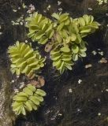

|

Однолетние, свободно плавающие растения до 10 см дл., без настоящих корней.
Листья (вайи) расположены по 3 в довольно сближенных мутовках; два из них плавающие,
овально-эллиптические или эллиптические, на очень коротких черешочках, толстоватые,
цельнокрайние, тупые, на верхней стороне зеленые, покрытые бугорками,
несущими пучки коротких волосков, на нижней – буроватые. Подводные листья разделены на нитевидные корнеобразные доли,
густо покрытые волосками. Спорокарпии почти шаровидные, расположенные по 3–8 у основания подводных листьев.
Фотограф: Владимир Семашко |